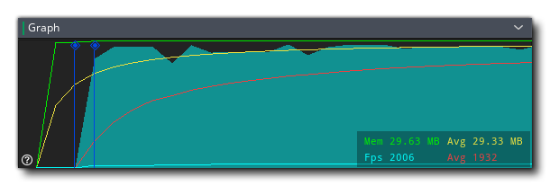
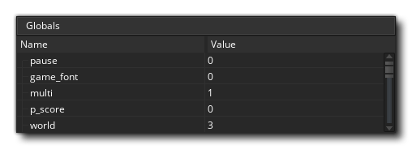
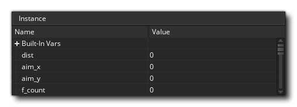

Der Debugger ist ein leistungsfähiges Werkzeug zum Überprüfen Ihres Spiels und ist besonders nützlich, um Fehler und Fehler in Ihrem Code zu finden und zu überprüfen, ob Skripts ausgeführt werden, wenn sie ausgeführt werden sollten, und dass Variablen und Arrays die erwarteten Werte enthalten usw. Sie können den Debugger starten, indem Sie Ihr Spiel in der GameMaker Studio 2 IDE über die Schaltfläche Debug ausführen  am oberen Rand der IDE oder indem Sie zum Build-Menü gehen und "Debug" auswählen.
am oberen Rand der IDE oder indem Sie zum Build-Menü gehen und "Debug" auswählen.
Wenn Sie ein Spiel im Debug-Modus ausführen, zeigt die IDE die verschiedenen für den Debugger verfügbaren Tools an: 
Das oben abgebildete Bild zeigt das Standardlayout für den Debugger. Wie bei anderen Aspekten der IDE können Sie dieses an Ihre Bedürfnisse anpassen, indem Sie nicht benötigte Fenster schließen oder die Größe der benötigten Dokumente und Fenster ändern. Sie können das Debugger-Layout jederzeit über das Debugger- Kontextmenü oben in der IDE zurücksetzen oder geschlossene Fenster erneut öffnen: 
Im Folgenden erklären wir, wofür jeder Abschnitt des Debuggers dient:
Die Diagrammansicht zeigt Ihnen eine grafische Darstellung, wie Ihr Projekt Speicher verwendet und wie lange es dauert.: 
Die Grafik zeigt die aktuelle und durchschnittliche Speicherbelegung sowie die aktuelle und durchschnittliche FPS über die Zeit. Mit können Sie die Ansicht vergrößern oder verkleinern
/
zusammen mit dem Mausrad
Wenn Sie den Mauszeiger über eines der Diagrammelemente positionieren, wird der Wert für dieses Element an der ausgewählten Stelle angezeigt.
Die Diagrammansicht zeigt auch bestimmte Debug-Ereignisse als Punkte entlang der Länge des Diagramms an. Diese Ereignisse werden von GameMaker Studio 2 zu bestimmten GameMaker Studio 2 während des Spiels automatisch generiert, um bestimmte wichtige Ereignisse anzuzeigen. Sie können jedoch auch eigene Diagrammelemente mithilfe der Funktionen hinzufügen show_debug_message() und debug_event(). Systemereignisse werden in einer anderen Farbe gekennzeichnet als die Ereignisse, die durch Code ausgelöst werden:
Wenn Sie das Spiel im Debugging-Modus ausführen und über diese Ereignisse fahren, wird eine Liste aller Ereignisse angezeigt, die zu diesem Zeitpunkt des Spiels ausgelöst wurden. Sie haben die Möglichkeit, die Liste in einem separaten Fenster anzuzeigen, indem Sie auf klicken " Klicken Sie hier, um in einem neuen Fenster zu öffnen ":
Die Ressourcenansicht zeigt Ihnen eine Liste aller im Projekt verwendeten Ressourcen, die Code oder DnD™ -Aktionen enthalten können. Dieser Abschnitt ähnelt der Ressourcenstruktur. Sie können die darin enthaltenen Elemente erweitern, um weitere Informationen anzuzeigen, beispielsweise die verschiedenen Ereignisse für ein bestimmtes Objekt. Sie können dann doppelklicken
Auf einer der Ressourcen können Sie den Code dafür in der Codeansicht öffnen, in der Sie Werte überprüfen und Haltepunkte hinzufügen oder entfernen können.
In diesem Fenster werden der aktuelle Aufrufstack von Ereignissen sowie die Zeilennummer für den Code angezeigt, der durchlaufen wird. Der Debugger muss angehalten worden sein, bevor hier Informationen angezeigt werden.
Die Symbolleiste enthält die Debugger-Steuerelemente sowie einige grundlegende Informationen wie Speicherbelegung, das aktuelle (reale) FPS für das Spiel und eine Anzeige, um anzuzeigen, ob der Debugger derzeit verbunden ist oder nicht (die Anzeige leuchtet grün, wenn eine Verbindung zu einer laufenden Instanz besteht.) von Ihrem Projekt und rot ansonsten). Die verfügbaren Steuerelemente sind:
Dadurch wird das Spiel erneut gestartet, nachdem es unterbrochen wurde (Tastenkombination) f5 ). Dadurch wird das Spiel unterbrochen (unterbrochen). Startet das Spiel neu. Beendet das Spiel. Steigen Sie in einen Codeblock oder ein Skript (Tastenkombination) ein f11 ). Gehen Sie über einen Codeblock oder ein Skript (Tastenkombination) f10 ). Verlassen Sie einen Codeblock oder ein Skript (Tastenkombination) + f11 ).
Aktivieren oder deaktivieren Sie Echtzeit-Updates für die Debug-Informationen (standardmäßig deaktiviert). Mit den ersten drei Tasten können Sie Ihr Spiel steuern und jederzeit starten, anhalten, neu starten oder stoppen. Wenn das Spiel angehalten ist 8, indem Sie entweder auf die Schaltfläche Pause oder auf einen Haltepunkt klicken), können Sie die drei "Schritt" -Tasten verwenden, um den Code zu durchlaufen. Dies bedeutet einfach, dass Sie Ihrem Spiel sagen können, dass es die aktuelle Codezeile ausführen soll, dann die nächste Codezeile betreten und Ihnen die Möglichkeit geben, das gesamte Spiel eine Zeile Code durchzugehen, wenn Sie möchten. Normalerweise würden Sie dazu einfach die Step In- Taste verwenden, aber Sie haben auch einen Code zum Überschreiben des Codes und einen Code zum Verlassen des Codes. Das Umschalten ist nützlich, wenn Sie große Skripts durchlaufen müssen. Wenn Sie auf dieses Symbol klicken, wird das gesamte Skript oder der Codeblock als ein einzelner Schritt ausgeführt und danach in der nächsten Zeile angehalten. Wenn Sie das Skript verlassen, werden Sie aus einem Skript entfernt (sie werden ausgeführt, aber alles auf einmal) und stoppen Sie den nächsten Schritt, wenn sich der Umfang ändert. Mit dem letzten Symbol kann das Debug-Fenster seine Daten in Echtzeit aktualisieren, sodass Sie sehen können, wie sich Variablen ändern oder Instanzen während des Vorgangs erstellen und löschen. Beachten Sie, dass dies die Spieleleistung beeinflussen kann und nicht alle Informationen in Echtzeit verfügbar sind. Zum Beispiel kann die Render State Watch (siehe Abschnitt Watches unten) nicht in Echtzeit angezeigt werden.
In der Codeansicht können wir verschiedene Skripts oder Ereigniscode aus unserem Projekt während der Ausführung anzeigen und überprüfen. Standardmäßig beginnt dieser Vorgang leer, Sie können jedoch doppelt klicken
Sie können auch die rechte Maustaste verwenden
Um das Kontextmenü zu öffnen, können Sie auch Haltepunkte hinzufügen oder entfernen und den ausgewählten Code in die Zwischenablage kopieren.
Weitere Informationen zu BreakPoints finden Sie weiter unten auf dieser Seite.
Die ganze Idee des Debuggers besteht darin, Ihnen zu erlauben, jedes Detail Ihres Spiels zu "beobachten". Dies geschieht mit Hilfe von "Watch-Fenstern", die standardmäßig im Ausgabefenster geöffnet sind, das sich an der Unterseite der IDE befindet. Sie können auf die verschiedenen Registerkarten klicken, um die darin enthaltenen Uhren anzuzeigen. Einige davon werden in Echtzeit aktualisiert (wie die Global-Uhren), während andere (wie die Local-Uhren) verlangen, dass der Debugger das Spiel angehalten hat. Wir haben jedes der Watch-Fenster hier separat aufgelistet und erklärt, was sie tun:
Das Locals- Fenster zeigt die aktuellen Schritteigenschaften an. Dazu gehören der Name des aktuell ausgeführten Ereignisses (oder Skripts), der Offset im Code der virtuellen Maschine für das aktuelle Skript (das Akronym "PC" steht für "Programmzähler") "self" -Instanz, die den Codeblock ausführt, und die "andere" -Instanz im Ereignis. Dieser letzte Teil ist nur gültig, wenn das Ereignis ein Kollisionsereignis ist oder ein Ereignis vorliegt with im Code verwendet. Wenn sich die Instanz in einer Kollision befindet, zeigt "andere" die andere Instanz (und ihre Variablen) in der Kollision an, aber wenn es eine ist with dann wird die "Self" -Instanz zu der, auf der der Code ausgeführt wird, während "Andere" die Instanz ist, die tatsächlich den Code enthält with. Zu allen anderen Zeitpunkten zeigt "other" einfach die gleichen Daten wie "self". Nach all diesen Informationen finden Sie eine Liste aller lokalen Variablen, die aktuell für den durchlaufenden Codeblock deklariert sind. Wenn Sie mit der rechten Maustaste klicken

Das Globals- Fenster zeigt eine Liste aller aktuell deklarierten globalen Variablen und ihrer Werte. Wenn Sie mit der rechten Maustaste klicken
In diesem Fenster können Sie eine bestimmte Variable hinzufügen, die Sie überwachen möchten. Dies kann eine globale oder Instanzbereichsvariable, eine eingebaute Variable oder sogar ein Array oder eine Datenstruktur sein. Wenn der durchlaufene Instanzcode über die überwachte Variable verfügt, wird diese hier angezeigt. Das bedeutet, dass Sie einen Wert leicht nachverfolgen können, ohne ihn in den Locals oder Globals-Fenstern suchen zu müssen. Wenn Sie mit der rechten Maustaste klicken

Wie der Name schon sagt, werden in diesem Fenster alle Instanzvariablen, lokalen Variablen und eingebauten Variablen angezeigt, die mit der Instanz verknüpft sind, die aktuell im Quellfenster durchlaufen wird (wenn eine Instanz mit dem Schlüsselwort "other" oder dem referenziert wird with Anweisung, dann zeigt dieses Fenster stattdessen diese Instanzeigenschaften an).
Wenn Sie alle Instanzen sehen möchten, die sich aktuell im Raum befinden, können Sie dieses Fenster auswählen und diese werden aufgelistet. Sie können auch den Status aller eingebauten oder Instanzvariablen sehen, die über sie verfügen, und Sie können mit der rechten Maustaste klicken
In diesem Fenster können Sie eine Instanz aus Ihrem Spiel auswählen. Dies geschieht, indem Sie einfach das Spiel anhalten und dann auf eine sichtbare Instanz im Spielfenster klicken. Die unter dem Mauszeiger gefundene Instanz wird dann im Fenster "Ausgewählte Instanz" mit Informationen angezeigt, in denen Sie die eingebauten und Instanzvariablen sehen können, genau wie im Fenster "Instanzen".
Diese Uhr zeigt Ihnen alle Informationen an, die für den Status des aktuell gerenderten Frames verfügbar sind, wie etwa das Zeichnen von Alpha oder die Füllfarbe. Dies kann nicht in Echtzeit aktualisiert werden, daher müssen Sie das Spiel anhalten, um die Frame-Details zu erhalten und zu aktualisieren.
Mit dieser Uhr können Sie genau sehen, was auf den Oberflächen Ihres Spiels (einschließlich der.) Gezeichnet wird application surface ) sowie die im Speicher befindlichen Textur-Seiten. Sie können aus Texturen oder Oberflächen am unteren Rand der Uhr auswählen und dann mit der Maus über die Textur- oder Oberflächen-ID fahren, um sie in einem Popup-Fenster anzuzeigen.
Beachten Sie, dass der Debugger vor dem Update angehalten werden muss.
In diesem Fenster können Sie das aktuelle Systemprofil des getesteten Spiels sehen, in dem Sie alles in Ihrem Spiel prüfen können, von ganzen Ereignissen bis zu einzelnen Funktionsaufrufen, um zu sehen, wie sie funktionieren, und um mögliche Probleme oder Engpässe zu erkennen. Weitere Informationen zur Profilierung finden Sie im Abschnitt weiter unten auf dieser Seite.
Wenn Sie in Ihrem Spiel Puffer initialisiert haben, werden Ihnen in diesem Fenster die Pufferdaten angezeigt. Sie können einen beliebigen Puffer auswählen, indem Sie den Puffer-ID- Wert festlegen, der für den ersten in Ihrem Spiel erstellten Puffer bei 0 beginnt und für jeden aufeinander folgenden Puffer um 1 erhöht wird.
Wenn Sie mit der rechten Maustaste klicken


Beachten Sie, dass während des Spiels die Debug-Fenster standardmäßig nicht mit Variablenwerten und anderen Details aktualisiert werden. Daher müssen Sie zuerst die Schaltfläche Pause verwenden  Im Debugger können Sie das Spiel pausieren, bevor Locals, Globals und andere Daten verfügbar sind, oder die Echtzeitaktualisierung mithilfe der Symbole oben aktivieren
Im Debugger können Sie das Spiel pausieren, bevor Locals, Globals und andere Daten verfügbar sind, oder die Echtzeitaktualisierung mithilfe der Symbole oben aktivieren  . Die einzige Ausnahme von dieser Regel ist die Profilansicht, die in Echtzeit aktualisiert wird, wenn sie unabhängig vom Echtzeitschalter aktiviert wird, da sie über eine eigene Ein / Aus-Schaltfläche verfügt.
. Die einzige Ausnahme von dieser Regel ist die Profilansicht, die in Echtzeit aktualisiert wird, wenn sie unabhängig vom Echtzeitschalter aktiviert wird, da sie über eine eigene Ein / Aus-Schaltfläche verfügt.
Datentypen
Wenn Sie eine Variable in einem der Fenster beobachten, kann es sich um einen von mehreren Datentypen handeln. Aufgrund der Art und Weise, wie GameMaker Studio 2 bestimmte Dinge speichert, weiß der Debugger jedoch nicht immer genau, was die Variable enthält. Dies liegt daran, dass die internen ID-Werte für Datenstrukturen oder Instanzen ganze Zahlen sind und der Debugger nicht immer weiß, ob der in einer Variablen gespeicherte Integerwert für eine Datenstruktur oder eine Instanz oder einfach ein Integerwert ist. Aus diesem Grund können Sie mit der rechten Maustaste klicken  für einen beliebigen Variablenwert und erhalten Sie ein Popup-Fenster, in dem die verfügbaren Datentypen aufgelistet werden, aus denen diese Variable bestehen könnte.
für einen beliebigen Variablenwert und erhalten Sie ein Popup-Fenster, in dem die verfügbaren Datentypen aufgelistet werden, aus denen diese Variable bestehen könnte. 
Strings und Arrays lassen diese Option nicht zu, und es ist erwähnenswert, dass selbst wenn eine Datenstruktur in einer Instanzvariablen gespeichert ist, ihre ID-Nummer global ist. Wenn Sie also über vier Instanzen verfügen, wird jeweils eine ds_list erstellt. Jede Liste hat eine ID von 0 bis 3 und sie werden nicht alle 0 sein.
Nachdem Sie Ihren Datentyp ausgewählt haben, zeigt die Variable die Einträge in der Struktur an, indem Sie einfach auf den kleinen klicken  neben dem Namen. Dadurch werden die Strukturinhalte erweitert und im Falle des "Watches" -Fensters können Sie diese auch ändern.
neben dem Namen. Dadurch werden die Strukturinhalte erweitert und im Falle des "Watches" -Fensters können Sie diese auch ändern.
Haltepunkte
Ein Haltepunkt ist eine Stelle in Ihrem Projektcode, an der Sie anhalten möchten, damit Sie sehen können, was los ist. Wenn der Debugger ausgeführt wird, können Sie Haltepunkte jederzeit und in jedem Code- oder Skriptblock durch Klicken mit der linken Maustaste hinzufügen oder entfernen  in der Gosse (wo die Zeilennummern sind), oder Sie können die rechte Maustaste verwenden
in der Gosse (wo die Zeilennummern sind), oder Sie können die rechte Maustaste verwenden  So öffnen Sie das Kontextmenü, in dem Sie Haltepunkte hinzufügen oder entfernen können:
So öffnen Sie das Kontextmenü, in dem Sie Haltepunkte hinzufügen oder entfernen können:

Haltepunkte können auch von der GameMaker Studio 2 IDE aus festgelegt werden. Wenn Sie Ihr Projekt schreiben, können Sie sie jederzeit mit hinzufügen oder entfernen f9 (oder mit der rechten Maustaste  und Auswählen von "Haltepunkt umschalten") entweder für eine Aktion im Objektfenster oder für eine Zeile in einem Code-Editor-Fenster. Wenn Sie Ihr Spiel jetzt im Debug-Modus ausführen, wird es an dem von Ihnen definierten Punkt (oder Punkten) angehalten. In der IDE festgelegte Haltepunkte werden zusammen mit Ihrem Projekt gespeichert und bleiben für verschiedene Läufe erhalten, bis sie wieder entfernt werden. Wenn Sie jedoch einen Haltepunkt zu Ihrem Code im Debugger hinzufügen, geht dieser nach dem Schließen des Moduls oder einem neuen Testlauf verloren. Beachten Sie, dass alle Haltepunkte im Ausgabefenster angezeigt werden, wo sie aktiviert, deaktiviert oder sogar entfernt werden können.
und Auswählen von "Haltepunkt umschalten") entweder für eine Aktion im Objektfenster oder für eine Zeile in einem Code-Editor-Fenster. Wenn Sie Ihr Spiel jetzt im Debug-Modus ausführen, wird es an dem von Ihnen definierten Punkt (oder Punkten) angehalten. In der IDE festgelegte Haltepunkte werden zusammen mit Ihrem Projekt gespeichert und bleiben für verschiedene Läufe erhalten, bis sie wieder entfernt werden. Wenn Sie jedoch einen Haltepunkt zu Ihrem Code im Debugger hinzufügen, geht dieser nach dem Schließen des Moduls oder einem neuen Testlauf verloren. Beachten Sie, dass alle Haltepunkte im Ausgabefenster angezeigt werden, wo sie aktiviert, deaktiviert oder sogar entfernt werden können.
Profilierung
Der Debugger ermöglicht es Ihnen, Ihren Code schrittweise zu durchsuchen und Probleme mit der Code-Basis zu finden. Manchmal müssen Sie jedoch nach Details zum Subtler suchen, um Ihre Spiele richtig zu optimieren. Die Profil- Option hilft Ihnen dabei, indem Sie einen Überblick über die Leistung erhalten und anzeigen, wie lange es dauert, um Funktionen und Skripts aufzurufen, und sogar, wie lange es dauert, bis ein bestimmtes Ereignis abgeschlossen ist. 
Neben dem Hauptfenster mit den verschiedenen aufgerufenen Ereignissen, Skripten und Funktionen haben Sie folgende Möglichkeiten, den Profiler zu verwenden:
Dies ist die Schaltfläche zum Aktivieren oder Deaktivieren des Profilers. Wenn diese Option aktiviert ist, wird der Profiler gestartet, und im Hauptfenster werden Ereignisse, Skripts und Funktionen mit jeweils unterschiedlichen Datenwerten aufgelistet. Wie diese Daten angezeigt werden, hängt von der Zeitanzeige und dem Ansichtsmodus ab (beide werden weiter unten auf dieser Seite erklärt).
Mit diesem Kontrollkästchen können Sie zwischen der durchschnittlichen Zeit und der absoluten Zeit für den Profiler wechseln. Wenn dies nicht aktiviert ist, sind die im Hauptfenster angezeigten Werte die Gesamtzahl der Aufrufe an die Funktion, das Skript oder das Ereignis und die Gesamtzeit (Zeitangaben in Mikrosekunden ) im Verlauf des Profils. Wenn Sie dies jedoch aktivieren, zeigen diese Spalten die durchschnittliche Zeit pro Schritt für jede Funktion, jedes Skript oder Ereignis und die durchschnittliche Anzahl an Aufrufen an.
In diesem Menü können Sie den Anzeigemodus auswählen, der entweder von oben nach unten oder von unten nach oben sein kann.
Wenn Sie den Ansichtsmodus von oben nach unten auswählen, wird das Profil von oben nach unten angezeigt (mehr oder weniger identisch mit der Callstack-Hierarchie). Auf diese Weise werden das Ereignis, das Skript und alle verwendeten Funktionen angezeigt. Beachten Sie, dass Sie doppelklicken können
Wenn Sie den Bottom-Up-Ansichtsmodus auswählen, werden die Dinge von unten nach oben angezeigt, sodass Sie alle Funktionen und Skriptaufrufe einzeln anzeigen können. Klicken Sie in diesem Ansichtsmodus auf die Schaltfläche
Mit dem Ansichtsziel können Sie wählen, ob Sie die Projekt-GML (Ereignis- und Codedaten), die Hintergrund-Engine-Prozesse oder beides anzeigen möchten. Wenn Sie "GML" wählen, werden die Ereignisse, Funktionen und Skripts angezeigt, die in jedem Schritt aufgerufen werden, während in der Ansicht "Engine" nur die Engine-Aufrufe angezeigt werden, die für das Projekt erforderlich sind. So können Sie etwaige Engpässe auf die Art und Weise Ihres Projekts erkennen handhabt Dinge. Wenn Sie "Beide" auswählen, werden beide Datensätze angezeigt. Beachten Sie jedoch, dass bei Kombination mit der Ansicht "Bottom Up" die verschiedenen Skript- und Funktionsaufrufe innerhalb der Engine-Aufrufe verschachtelt werden und Sie auf klicken müssen
Die Profildaten werden in vier Spalten angezeigt. Wenn Sie auf eine der Spalten klicken, werden die Daten nach den Spaltenkriterien sortiert.

- Name - Dies ist der Name des Ereignisses, des Skripts oder der Funktion, die aufgerufen werden, und kann ein daneben, um weitere Anrufe an ihn oder von ihm zu bezeichnen (abhängig vom ausgewählten Ansichtsmodus). Sie können doppelklicken Auf einem der Namen können Sie den Codeblock oder das Skript im Quellfenster öffnen. Wenn Sie auf den oberen Rand dieser Spalte klicken, werden die Namen in alphabetischer Reihenfolge sortiert.
- Zeit - Hier wird entweder die Gesamtzeit angezeigt, die eine Funktion (oder ein Skript oder ein Ereignis) während der Profilerstellung beansprucht hat, oder die durchschnittliche Zeit, die jeder Schritt für den Aufruf (je nach der ausgewählten Zeitanzeige-Option) beansprucht hat, und er wird in angezeigt Mikrosekunden.
- Anrufe - Hier können Sie entweder die Gesamtzahl der Anrufe für das betreffende Ereignis, die Funktion oder das Skript oder die durchschnittliche Anzahl der Anrufe in einem einzigen Schritt anzeigen (abhängig von der ausgewählten Zeitanzeige-Option).
- Schritt% - Der hier angezeigte Wert ist der Gesamtprozentsatz eines einzelnen Schritts, den der Anruf ausgeführt hat.